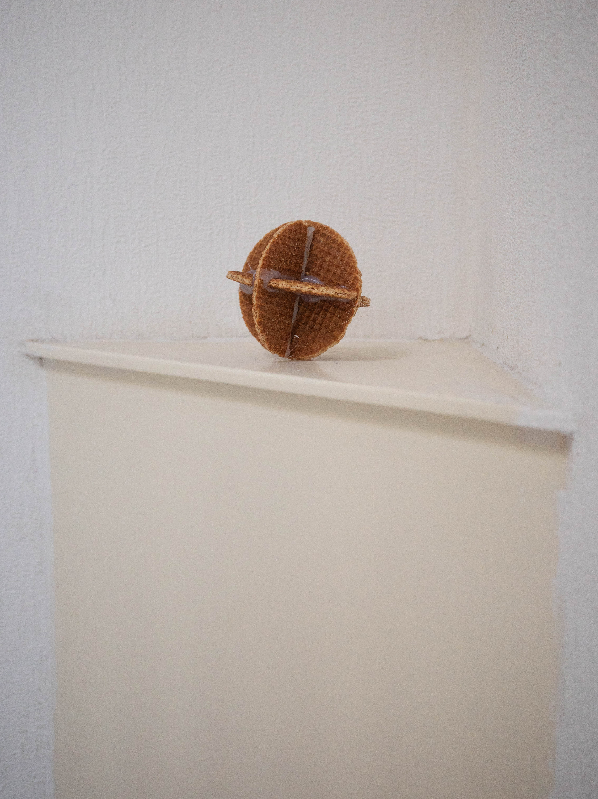
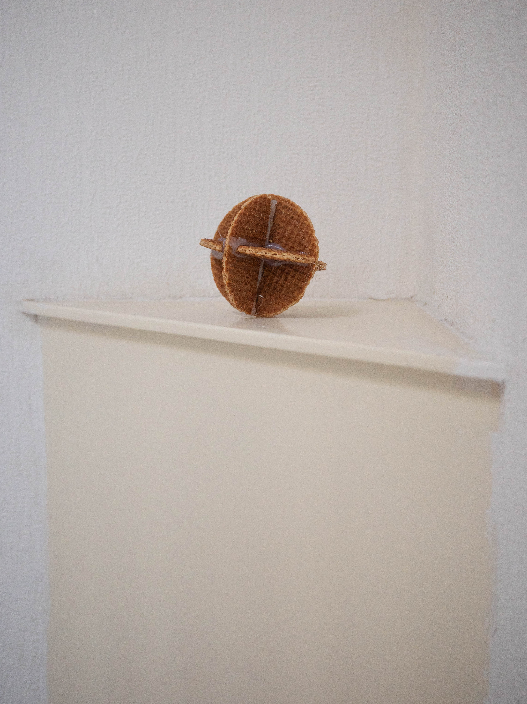

Heritage [2024]
Erfenis [2024]
With this work Pum van de Koppel tries to reconsider the expectations that surround a Dutch cultural belonging. He inherits stories from his father, who isn't born in the Netherlands, about his very Dutch upbringing which involved skipping class to eat stroopwafels in the park.
Met dit werk probeert Pum van de Koppel verwachtingen rondom een Nederlandse culturele verbondenheid te heroverwegen. Hij erft verhalen van zijn vader, die niet in Nederland geboren is, over zijn erg Nederlandse opvoeding, wat inhield; spijbelen om stroopwafels te eten in het park.
 
